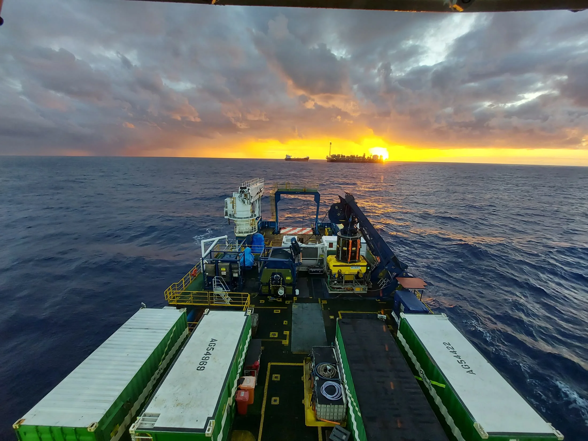
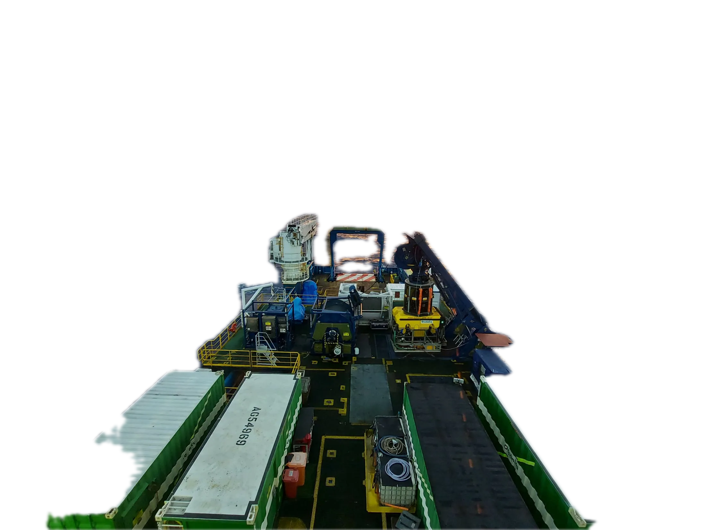
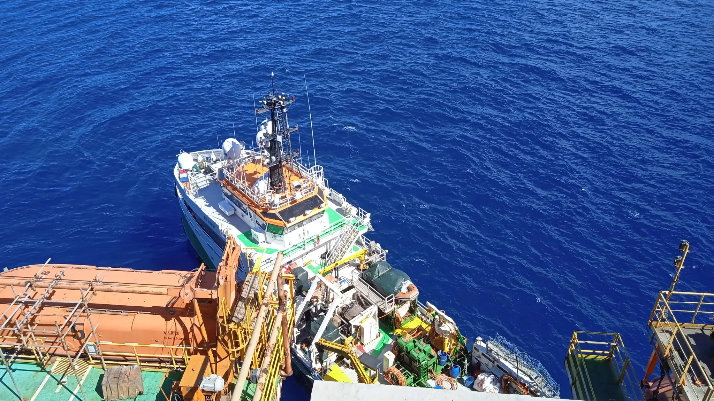

PT / EN◐Contato

Oceânica · Engenharia submarina desde 1978
Embarcações, ROVs, mergulhadores e engenharia a serviço da energia offshore. Da superfície a três mil metros.
Unidade de produção · FPSO
ROV Work Class no convés, pronto para lançamento
01 · Convés · Role para se aproximar

02 · Horizonte
Fonte: oceanica.com.br, novembro de 2026

03 · Ao lado
Inspeção, manutenção e reparo das estruturas das quais a energia offshore depende. Prevenção, contingenciamento e engenharia.
Embarcação da Oceânica ao lado de uma unidade de produção, vista do convés da unidade
↓ 02 · A escala da operação
Oceânica · desde 1978
Convés, ROV e, no horizonte, a unidade de produção que eles atendem.
Role ↓